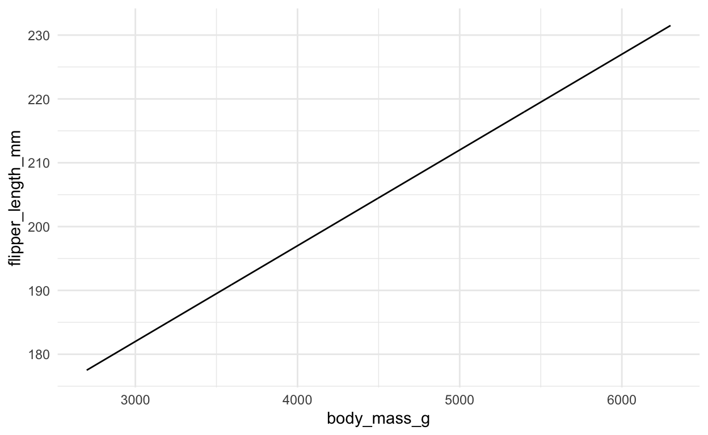
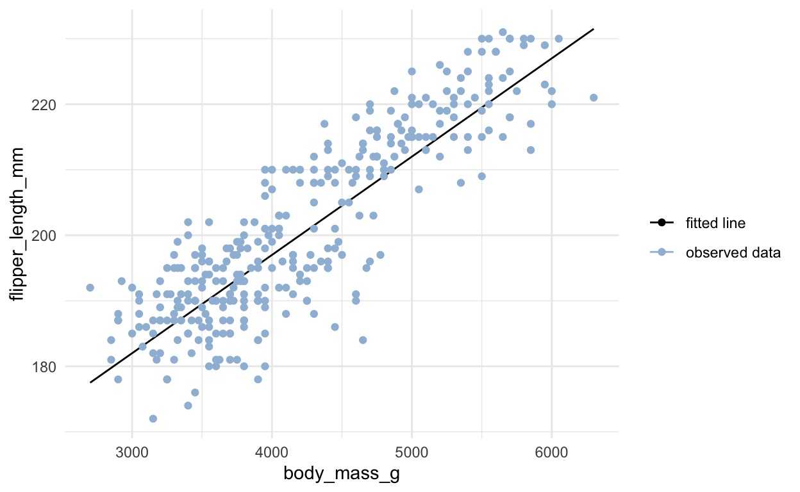
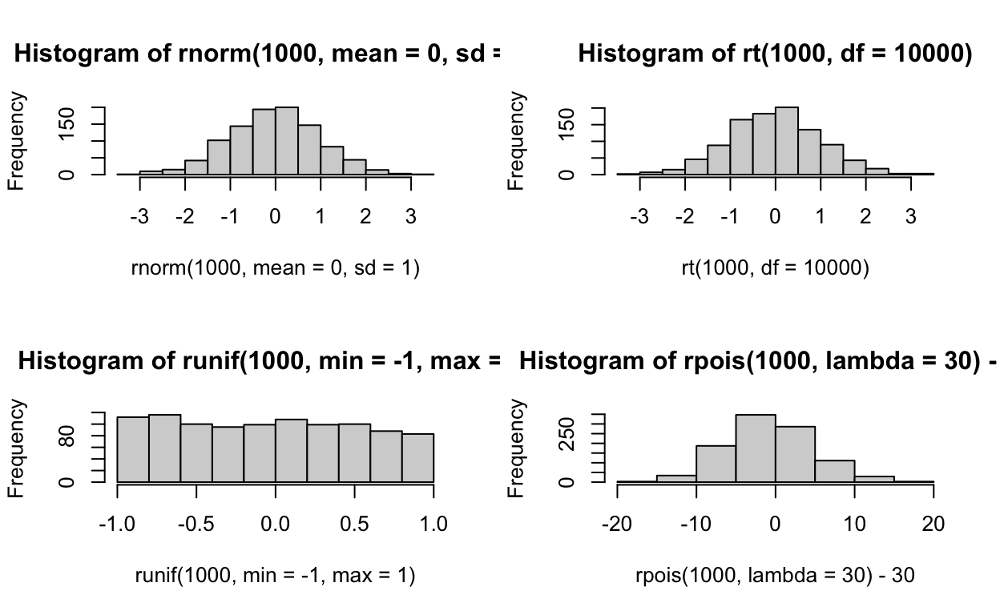
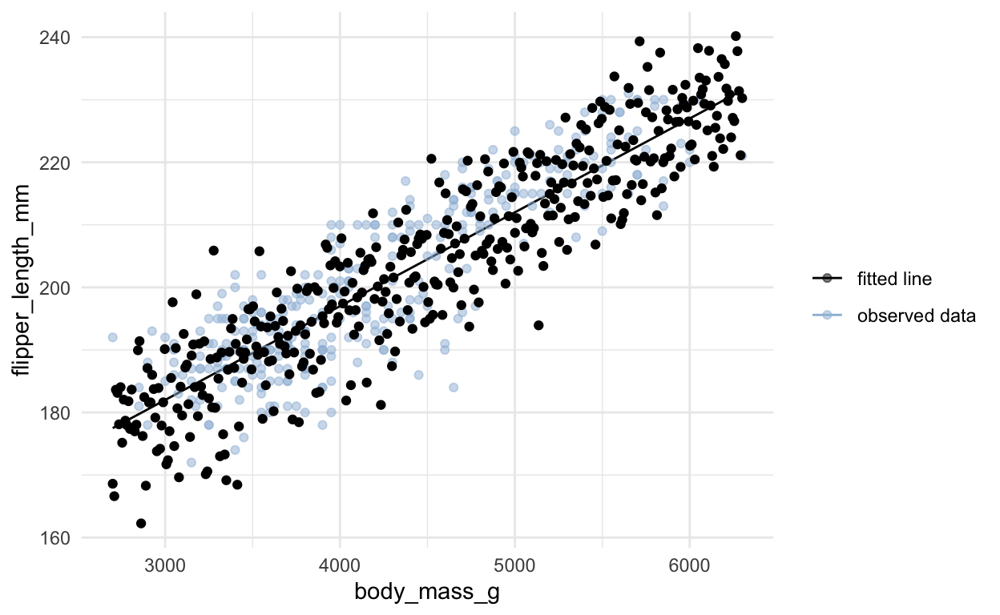
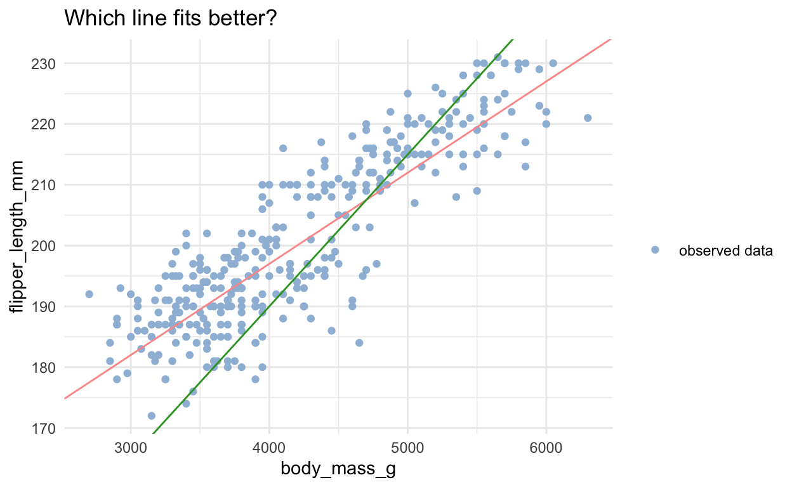
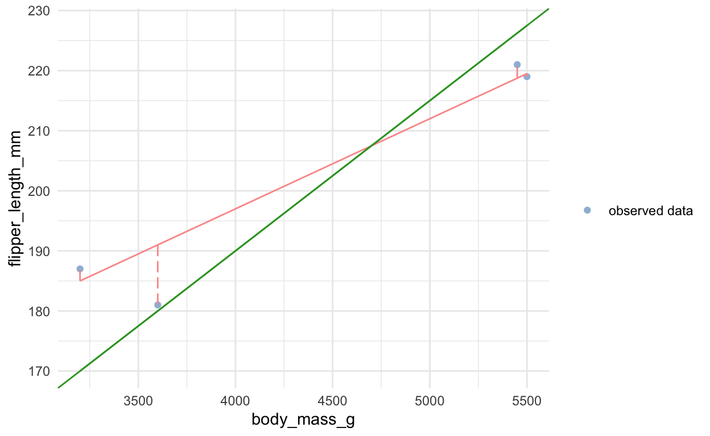
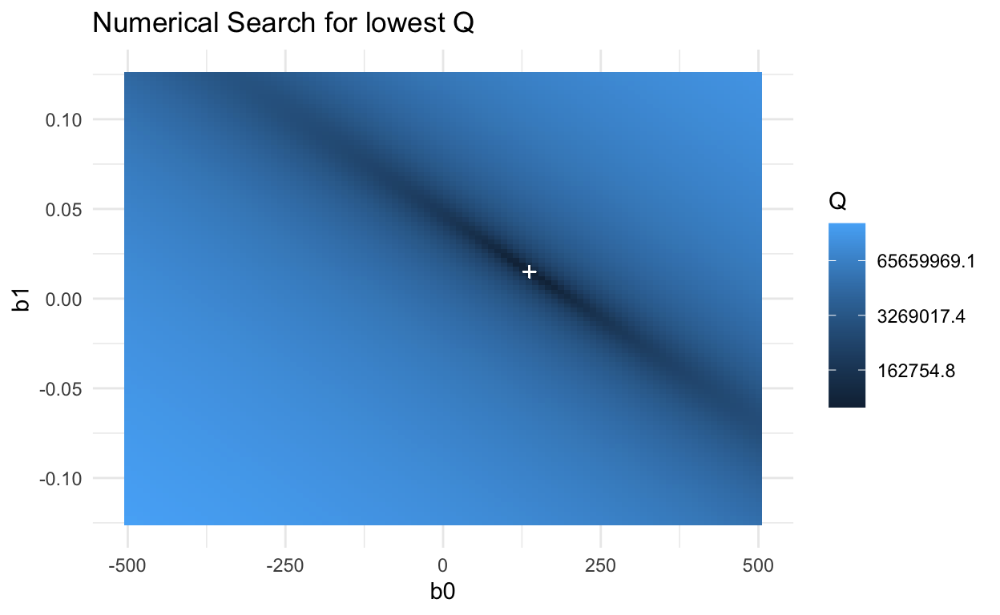
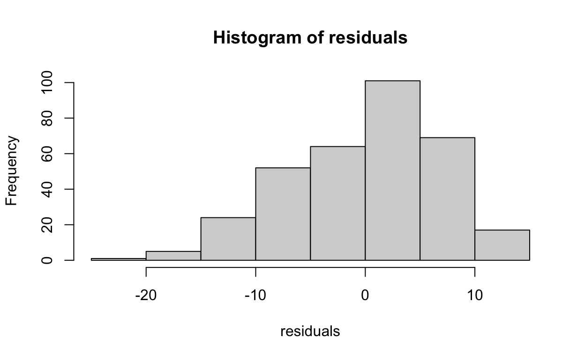
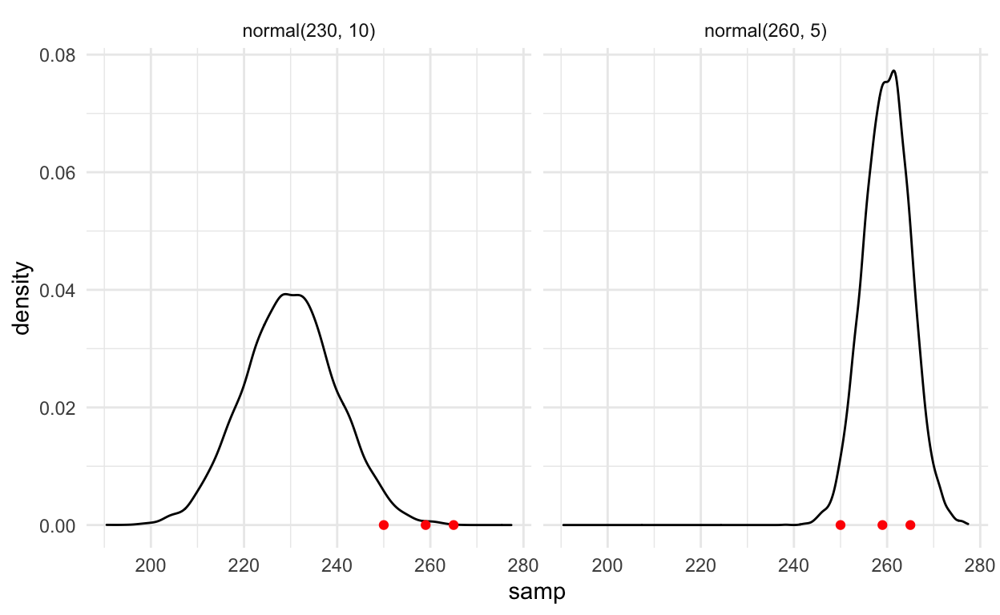
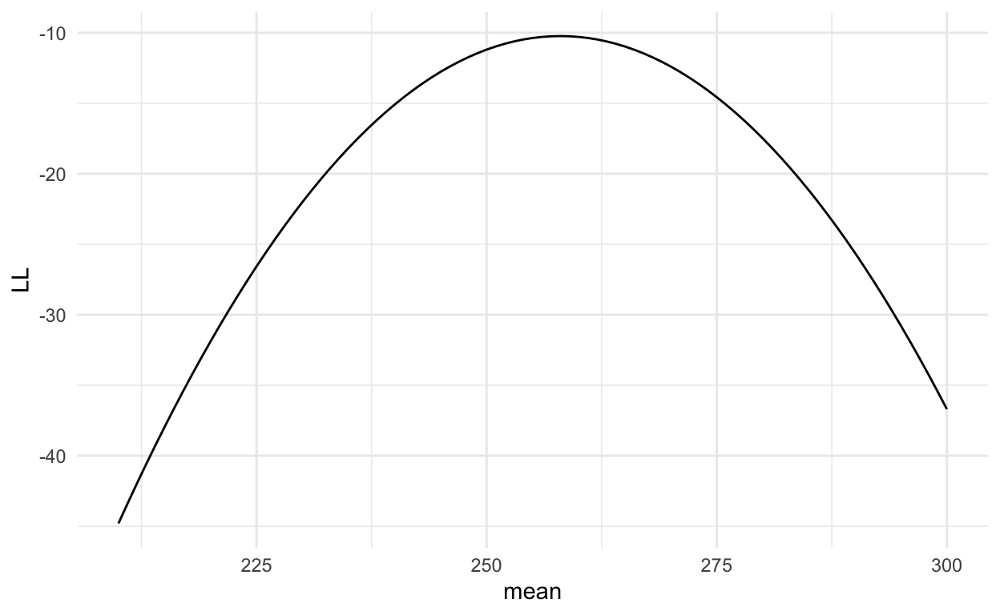

To get the markdown (```{r}), you do command alt I. To get (%>%), you do command shift M.
To undo, you press command Z. To run a code, you press alt enter. To run the entria chunck, press command alt N.
Setting the stage
Dataset
We will use the palmerpenguins dataset to demonstrate.
library(palmerpenguins)
library(printr) # helps automatically print nice tables in presentation
library(ggplot2)
theme_set(theme_minimal()) # automatically set a simpler ggplot2 theme for all graphics
knitr::include_graphics('resources/lter_penguins.png')

artwork by @allison_horst
Let’s explore
summary(penguins)
| species | island | bill_length_mm | bill_depth_mm | flipper_length_mm | body_mass_g | sex | year | |
|---|---|---|---|---|---|---|---|---|
| Adelie :152 | Biscoe :168 | Min. :32.10 | Min. :13.10 | Min. :172.0 | Min. :2700 | female:165 | Min. :2007 | |
| Chinstrap: 68 | Dream :124 | 1st Qu.:39.23 | 1st Qu.:15.60 | 1st Qu.:190.0 | 1st Qu.:3550 | male :168 | 1st Qu.:2007 | |
| Gentoo :124 | Torgersen: 52 | Median :44.45 | Median :17.30 | Median :197.0 | Median :4050 | NA’s : 11 | Median :2008 | |
| NA | NA | Mean :43.92 | Mean :17.15 | Mean :200.9 | Mean :4202 | NA | Mean :2008 | |
| NA | NA | 3rd Qu.:48.50 | 3rd Qu.:18.70 | 3rd Qu.:213.0 | 3rd Qu.:4750 | NA | 3rd Qu.:2009 | |
| NA | NA | Max. :59.60 | Max. :21.50 | Max. :231.0 | Max. :6300 | NA | Max. :2009 |
peng <- penguins[complete.cases(penguins), ]
Define a relationship
Y = body_mass_g
X = flipper_length_mm
- We are going to say body mass is a function of flipper length directly, following the equation:
\[ \begin{aligned} Y &= f(X) \\ Y &= \beta_0 + \beta_1X \\ \end{aligned} \]
- Using these numbers:
\[ \begin{aligned} \beta_0 &= 137, \beta_1 = .015 \\ Y &= 137 + .015X \end{aligned} \]
Define a relationship - Plot
- If that’s that case, then we’re going to be able to plot some data and look at the relationship between the two.
Make a new data frame:
# A sequence of 400 evenly spaced out numbers between the min and max.
sim_data <- data.frame(body_mass_g = seq(from = 2700, to = 6300, length.out = 400))
# Add a new column, where you input the y = equation from above^
sim_data$flipper_length_mm <- 137 + sim_data$body_mass_g * .015
# Create a graph
ggplot(sim_data, aes(x = body_mass_g, y = flipper_length_mm)) + geom_line()

Interpretation
- For every unit of X, how much does Y change?
\[ \begin{aligned} \beta_0 &= 137, \beta_1 = .015 \\ Y &= 137 + .015X \end{aligned} \]
What does \(\beta_0\), X, and \(\beta_1\) represent?
\(beta_0\) is the intercept and the value when X is zero. Meaning when the mass of a penguin is zero, its flippers are length 137. This is not practical because there is no such thing as a mass-less penguin.
X is the body mass
\(beta_1\) is the slope of the line, or rate of change. Meaning for every gram that a penguin gets larger, we expect that the length of the flipper will go up by .015mm. Those measurements are a little hard to interpret so we can multiply those values by 1000. (015*1000=15) We can say for every kg (which is 1000g), that a penguin becomes larger, their flipper is 15mm longer.
What are we missing?
- In reality, this is not a prefect relationship. The data does not follow the fitted line perfectly. There is a limit to how big or long a penguin can be.
Note:
- A statistical relation, unlike a functional relation, is not a perfect one. In general, the observations for a statistical relation do not follow directly on-the curve of relationship.
Overlay the actual data
# Overlay the actual data with the fitted line
ggplot(sim_data, aes(x = body_mass_g, y = flipper_length_mm)) +
geom_line(aes(color = "fitted line")) +
geom_point(data = peng, aes(color = "observed data")) +
scale_color_manual(values = c("observed data" = "#9ebcda",
"fitted line" = "black"), name = "")

- In this plot, you can see that the actual data points don’t perfectly match the fitted line of the linear model. The data looks like it doesn’t fit as well on the top right side.
How do we model the data generating process?
How can we better mimic the data that we see?
- We can add random noise.
What kind of random noise can we add?
- We want the noise to have an average of zero, constant and symmetric in width throughout the line.
What can we say about the random noise?
- In this case, we’re going to add random gaussian noise
- That is not a necessary assumption for what we’re going to start with which is least squares estimation.
Different types of noise
par(mfrow=c(2,2))
# Gaussian distribution (normal distribution)
hist(rnorm(1000, mean = 0, sd = 1))
# T-distribution
hist(rt(1000, df = 10000))
# Uniform distribution
hist(runif(1000, min = -1, max = 1))
# Poisson distribution (has a mean of 30 so we subtract it)
hist(rpois(1000, lambda = 30) - 30)

Different distributions in R
# List of different distributions
?distribution
Distributions in the stats package
Description:
Density, cumulative distribution function, quantile function and
random variate generation for many standard probability
distributions are available in the 'stats' package.
Details:
The functions for the density/mass function, cumulative
distribution function, quantile function and random variate
generation are named in the form 'dxxx', 'pxxx', 'qxxx' and 'rxxx'
respectively.
For the beta distribution see 'dbeta'.
For the binomial (including Bernoulli) distribution see 'dbinom'.
For the Cauchy distribution see 'dcauchy'.
For the chi-squared distribution see 'dchisq'.
For the exponential distribution see 'dexp'.
For the F distribution see 'df'.
For the gamma distribution see 'dgamma'.
For the geometric distribution see 'dgeom'. (This is also a
special case of the negative binomial.)
For the hypergeometric distribution see 'dhyper'.
For the log-normal distribution see 'dlnorm'.
For the multinomial distribution see 'dmultinom'.
For the negative binomial distribution see 'dnbinom'.
For the normal distribution see 'dnorm'.
For the Poisson distribution see 'dpois'.
For the Student's t distribution see 'dt'.
For the uniform distribution see 'dunif'.
For the Weibull distribution see 'dweibull'.
For less common distributions of test statistics see 'pbirthday',
'dsignrank', 'ptukey' and 'dwilcox' (and see the 'See Also'
section of 'cor.test').
See Also:
'RNG' about random number generation in R.
The CRAN task view on distributions, <URL:
https://CRAN.R-project.org/view=Distributions>, mentioning several
CRAN packages for additional distributions.Add random noise to the data
- Created data follows normal distribution, with a standard deviation of 6.8 instead of 1.
# Graph the noise we just made
ggplot(sim_data, aes(x = body_mass_g, y = flipper_length_mm)) +
geom_line(aes(color = "fitted line")) +
geom_point(data = peng, aes(color = "observed data"), alpha = 0.5) +
scale_color_manual(values = c("observed data" = "#9ebcda",
"fitted line" = "black"), name = "") +
geom_point(aes(y = flipper_length_mm_w_noise))

By adding noise, we were able to graph the black dots above. Even though towards the end it doesn’t look the same, we can see that it even similar to the observed data (light blue dots).
Remember that the original data didn’t fit well on the right side. Maybe as researchers, depending on what we’re looking for, we care more about the inferences about data on the right side, this wouldn’t be the best model. Or maybe we care more about the inferences about data on the left side, then the model is a good fit.
One of the things that we are assuming is that the observations are not correlated with each other. The observations are independent.
A way that the observations can be dependent is that if you only went to one cluster of penguins that were the dominant group and they happen to be the big ones. Another way for them to be dependent is that off springs of certain penguins are going to be affected by their parents genetics. Another is what if you don’t tag the penguins you already looked at and end up looking at the same one again. There are certainly correlations between them in these cases. Also tech errors
Formal Statement of Model
\[ Y_i = \beta_0 + \beta_1X_i + \epsilon_i \]
- \(Y_i\) is the value of the response variable in the \(i\)th observation, in this case its flipper length
- \(\beta\)s are the parameters; \(beta_0, beta_1\) are somethings we are trying to estimate.
- \(X_i\) is a known constant, in this case body mass
- \(\epsilon_i\) is a random error term with \(E\{\epsilon_i\} = 0\), \(Var\{\epsilon_i\} = \sigma^2\). So the variance is constant and expected value of the error is zero. \(\sigma\{\epsilon_i, \epsilon_j\} = 0\) for all \(i, j; i \neq j\), meaning that the correlation between different error values is zero for all points
Features of Model
- Since \(E\{\epsilon_i\} = 0\) we can show that \(E\{Y_i\} = \beta_0 + \beta_1X_i\)
- Similarly \(\sigma^2\{Y_i\} = \sigma^2\)
- Because error terms are uncorrelated - Y’s are uncorrelated
Interpretation and Alternative Form
We can rewrite the equation so that the \(X_i\) term is centered by subtracting \(\bar{X}\)
- This doesn’t change \(\beta_1\) at all, but \(\beta_0\) is slightly different.
- Recall what \(\beta_0\) generally represents in this example
- We can rewrite so that:
\[ Y_i = \beta_0^* + \beta_1(X_i - \bar{X}) + \epsilon_i \]
summary(peng$body_mass_g)
| Min. | 1st Qu. | Median | Mean | 3rd Qu. | Max. |
|---|---|---|---|---|---|
| 2700 | 3550 | 4050 | 4207.057 | 4775 | 6300 |
- In this case, \(\bar{X}\) is 4207. We can subtract that from each value of X and re-run the regression. By doing this \(\beta_0^*\) goes by \(\bar{X} * beta_1\).
- When will \(Y_i = beta_0\)? When \(X_i\) equals to the mean, which will make \(beta_1 = 0\). Now instead of the intercept being the equivalent of a zero mass penguin, it will now be an average penguin.
Estimating the parameters
How do we know which line is better?
- Equal number of data points of each side of the line.
Method of Least Squares
- We want to minimize \(Q\) where:
ggplot(penguins, aes(x = body_mass_g, y = flipper_length_mm)) +
geom_point(aes(color = "observed data")) +
geom_abline(color = "#fb9a99", intercept = 137, slope = 0.015, show.legend = T) +
geom_abline(intercept = 90, slope = 0.025, color = "#33a02c") +
scale_color_manual(values = c("observed data" = "#9ebcda")) +
labs(title = "Which line fits better?", color = "")

Method of Least Squares
- We want to minimize \(Q\) where:
\[ Q = \sum^n_{i=1}{(Y_i - \beta_0 - \beta_1X_i)^2} \] - Q is our least squares value
Our estimates for \(\beta_0\) and \(\beta_1\) will be \(\hat\beta_0\) and \(\hat\beta_1\), respectively.
We are squaring it to avoid getting zero when we are above and below the line
This could pose a problem because if you have a point that’s very far from your line or center of data it could influence the fitting of the line.
Method of Least Squares: Visual
set.seed(202008)
d_least_squares <- penguins %>%
mutate(line1 = 137 + .015*body_mass_g,
line2 = 90 + .025*body_mass_g) %>%
sample_n(4) %>%
select(body_mass_g, flipper_length_mm, line1, line2)
d_least_squares %>%
ggplot(aes(x = body_mass_g)) +
geom_point(aes(y = flipper_length_mm, color = "observed data")) +
geom_line(aes(y = line1), color = "#fb9a99") +
geom_linerange(aes(ymin = line1, ymax = flipper_length_mm), color = "#fb9a99", linetype = "longdash") +
geom_line(aes(y = line2), color = "#33a02c") +
geom_abline(intercept = 90, slope = 0.025, color = "#33a02c") +
scale_color_manual(values = c("observed data" = "#9ebcda")) +
labs(color = "")

Calculate Q | Definitions
- Line1: \(Y = 137 + .015X\)
- Line2: \(Y = 90 + .025X\)
d_least_squares
| body_mass_g | flipper_length_mm | line1 | line2 |
|---|---|---|---|
| 3200 | 187 | 185.00 | 170.00 |
| 3600 | 181 | 191.00 | 180.00 |
| 5500 | 219 | 219.50 | 227.50 |
| 5450 | 221 | 218.75 | 226.25 |
Calculate Q | Definitions
# Caluse the sum of the squared differences
with(d_least_squares, sum((line1 - flipper_length_mm)^2))
[1] 109.3125[1] 389.8125- This means that according to this definition that line 1 fits better.
How do you solve for best \(\hat\beta_0\) and \(\hat\beta_1\)?
Numerical Search
- One way is to try a bunch of different values for \(beta_0 and beta_1\) and find the one with the lowest Q. The darker the value, the lower Q is.
all_params <- expand.grid(
b0 = seq(-500, 500, length.out = 100),
b1 = seq(-.125, .125, length.out = 100)
)
calculate_q <- function(b0, b1){
raw_diff <- with(peng, flipper_length_mm - (b0 + b1*body_mass_g))
Q <- sum(raw_diff^2)
Q
}
all_params$Q <- purrr::pmap_dbl(all_params, calculate_q)
ggplot(all_params, aes(x = b0, y = b1, fill = Q,color = NULL)) +
geom_tile() +
scale_fill_gradient(trans = "log", ) +
geom_point(aes(x = 137, y = .015), color = "white", shape = 3) +
labs(title = "Numerical Search for lowest Q")

What are problems with this approach?
- The problem with this approach is that it’s too slow with lots of parameters (although there are plenty of functions that optimize more efficiently like
optim).
How do you solve for best \(\hat\beta_0\) and \(\hat\beta_1\)?
Analytic Approach
\[ \hat\beta_1 = \frac{\sum{(X_i - \bar{X})(Y_i - \bar{Y})}}{\sum{(X_i - \bar{X})^2}} \]
\[ \hat\beta_0 = ??? \] - \(\hat\beta_0 = \bar{Y} - \hat\beta_1\bar{X}\)
What happens to that equation when we center \(X\)?
- All the \(\bar{X}\)s become zero. Because if we center the X, that means we subtracted the mean. By doing that, their new mean is zero. And so \(beta_0\) becomes \(\bar{Y}\)
What happens if we get more data points?
- Can you predict if \(beta_0 and beta_1\) will change, will they get bigger or smaller? We don’t know how the parameters will change
Solve for \(\hat{\beta_1}\) and \(\hat{\beta_0}\)
x_bar <- mean(peng$body_mass_g)
y_bar <- mean(peng$flipper_length_mm)
# Using the Analytic Approach
beta_1 <- sum((peng$body_mass_g - x_bar)*(peng$flipper_length_mm - y_bar))/sum((peng$body_mass_g - x_bar)^2)
beta_0 <- y_bar - beta_1*x_bar
beta_0
[1] 137.0396beta_1
[1] 0.01519526Point Estimation
- If I have a penguin that is 3K, how long do I expect that penguin’s flipper to be?
beta_0 + beta_1*3000
[1] 182.6254Residuals
\(e_i = Y_i - \hat{Y_i} = Y_i - (\hat\beta_0 + \hat\beta_1X_i)\)
A residual is the difference between the observed value of Y and the estimated value of Y (\(\hat{Y_i}\))
This is related to Q: Q is the sum of the residuals squared.
The residual is the distance between the point of the line.
residuals <- peng$flipper_length_mm - (beta_0 + beta_1*peng$body_mass_g)
hist(residuals)

- This looks a little skewed to the left. This one is not so bad.
Properties
\(\sum^{n}_{i = 1} {e_i} = ?\)
- \(\sum^{n}_{i = 1} {e_i} = 0\)
- Even though it is a little skewed, if we sum up all the residuals, they will equal zero.
\(\sum^{n}_{i = 1} {e_i^2} = ?\)
- It’s a minimum (it’s the same as Q)
\(\sum{Y_i} = \sum{\hat{Y}}\)
- The sum of all observed Ys is the same as sum of all of the predicted values, because sum of residuals = 0
\(\sum{X_ie_i} = 0\)
\(\sum{\hat{Y_i}e_i} = 0\)
The regression line will always go through \((\bar{X}, \bar{Y})\)
If you recenter the X’s, then that \(\bar{x}\) will be zero. Then \(beta_0\) is your average Y
Estimation of \(\sigma^2\) | Sample Variance
- The true variance (or unknown variance) is \(\sigma^2\), estimate it with \(\hat{\sigma}^2\)
\[ \hat{\sigma}^2 = \frac{\sum^n_{i=1}{(Y_i - \bar{Y})^2}}{n - 1} \]
Why \(n-1\)?
- Because we’re estimating the mean. It’s another way of thinking the amount freedom, degrees of freedom in our estimate. What we do is we use 1 degree of freedom when estimating so we have to subtract it.
Estimation of \(\sigma^2\)
Error sum of squares \[ SSE = \sum^n_{i = 1}(Y_i - \hat{Y_i})^2 \\ \]
Error mean square
It’s n-2 because we’re estimating \(beta_0\) and \(beta_1\) in \(\hat{Y}\). This will change with more parameters
\[ \hat{\sigma}^2 = MSE = \frac{SSE}{n-2} \]
- Expected value of MSE is unbiased, equaling the true variance
\[ E\{MSE\} = \sigma^2 \]
Estimation of \(\sigma^2\)
- If we got more data, the variance of our estimate should go down and MSE would decrease.
Maximum Likelihood Estimation
Motivation
- No matter what may be the form of the distribution of the error terms, the least squares method provides unbiased point estimators of \(\beta_0\) and \(\beta_1\) that have minimum variance among all unbiased linear estimators.
- To set up interval estimates and make tests, however, we need to make an assumption about the form of the distribution of the error terms.
Set Up
- How to define the mean/standard deviation
X <- c(250, 265, 259)
Is it more likely to come from normal(230, 10) or normal(260, 5) [normal distribution, with mean of and standard deviation of]?
- It would be 260 one because its closer to the actual values
Set Up | Visualization
# Make a histogram of it with the three points
samp_df <- bind_rows(
data.frame(samp = op_1_sample,
dist = "normal(230, 10)"),
data.frame(samp = op_2_sample,
dist = "normal(260, 5)")
)
samp_df %>%
ggplot(aes(x = samp)) +
geom_density() +
facet_wrap(~dist) +
geom_point(data = data.frame(samp = X), y = 0, color = "red")

- It seems that those three points are more likely to come from the distribution on the right.
Sampling vs Density Function
\[ L(\mu, \sigma | x) = \frac{1}{\sqrt{2\pi}\sigma}e^{-\frac{(x-\mu)^2}{2\sigma^2}} \]
raw_norm_eq <- function(x, mu, sigma){
1/sqrt(2*pi*sigma^2) * exp(-((x-mu)^2/(2*sigma^2)))
}
all.equal(raw_norm_eq(210:260, mu = 230, sigma = 10),
dnorm(210:260, mean = 230, 10))
[1] TRUELikelihood Calculation
lh <- data.frame(X = X,
opt_1_l = dnorm(X, mean = 230, 10),
opt_2_l = dnorm(X, mean = 260, sd = 5))
The second one is larger, meaning that it is more likely that the points came from the second distribution.
The likelihood calculation depends on how well the data fits. The total likelihood can go down when you have more data, because when you multiply a # less than 1 with another # less than 1 it becomes even smaller. That’s why when your comparing it, you need to have the same amount of data in both.
The likelihood is not the probability. The probability of any 1 piece of data is zero. In order to get the probability, you have to integrate over sections of density functions.
LogLiklihood Calculation
- Multiplying ever smaller numbers becomes a problem for the computer so we often work with the loglikelihood
- So what you end up doing is loglikelihood
- The log is to the base e
- If you have a high loglikelihood, you’re closer to zero, you’ll also have a higher likelihood
Finding Optimal Points
- Keep sigma constant at 10
- Calculating log likelihood for different values of the mean
expand.grid(mean = 210:300,
sd = 10) %>%
mutate(LL = purrr::map2_dbl(mean, sd, ~sum(dnorm(X, .x, .y, log = T)))) %>%
ggplot(aes(x = mean, y = LL)) +
geom_line()

- The most likely value is at the top of the curve, at mean 260
- This is a formal way of judging if data are likely to come from a distribution
- We would have a better understanding of what the true mean of the data was the pointer, steeper, this graph is.
- For this graph it’s a little flat at the top, the mean has a range of 250-262. but if it was pointy, it’ll be an exact true mean
Application to regression
\[ \begin{aligned} L(\mu, \sigma | x) & = \frac{1}{\sqrt{2\pi}\sigma}e^{-\frac{(x-\mu)^2}{2\sigma^2}} \\ \mu & = \beta_0 + \beta_1X_i, x = Y_i \\ L(\beta_0, \beta_1, \sigma | X, Y) & = \frac{1}{\sqrt{2\pi}\sigma}e^{-\frac{(Y_i - \beta_0 - \beta_1X_i)^2}{2\sigma^2}} \end{aligned} \]
- Likelihood in terms of regression
- We want to define \(\mu_0\)
- From the first eq, we’re going to substitute our expectation of Y from the regression equation into \(\mu_0\) and the actual value is Yi and so that’s the difference there.
- That means we can test the likelihood of those 3 parameters given the data that we’re seeing.
- On third equation, the likelihood of \(beta_0, beta_1, sigma\) (these 3 estimates we’ve been estimating using the method of least squares previously) given the observed data \(X_i, Y_i\) is given =
- we want to define \(\mu_0\) by subbing a different equation for the mean
- What we’re saying is that the data and in fact the residual, error term, comes from a normal distribution. The normal distribution is defined by the first equation. What combination of these 3 parameters gives me the highest likelihood given the data. This is what max likelihood estimation is, and its important because the least squares method can only get us so far.
- To take us to different types and to generalize the linear model, we would need to use the max likelihood estimation. And leverage that because we can look at lots of different distributions that way and that’s how we can expand our repertoire of possible regressions
For n points:
\[ \begin{aligned} L(\beta_0, \beta_1, \sigma) & = \prod^{n}_{i=1}\frac{1}{\sqrt{2\pi}\sigma}e^{-\frac{(Y_i - \beta_0 - \beta_1X_i)^2}{2\sigma^2}} \\ \end{aligned} \]
Solving the parameters
- \(\beta_0\) and \(\beta_1\) are estimated the same as with least squares
- Here we are making assumptions about the distribution of the error terms. This is not an unbiased estimate of \(\hat{\sigma}^2\)
- This is biased
- Unbiased estimates may not exist in more complicated regressions
\[ \hat{\sigma}^2 = \frac{\sum{(Y_i - \hat{Y_i})^2}}{n} \]
On Centering
| Min. | 1st Qu. | Median | Mean | 3rd Qu. | Max. |
|---|
#compare
lm(flipper_length_mm ~ body_mass_g + 1, data = peng)
Call:
lm(formula = flipper_length_mm ~ body_mass_g + 1, data = peng)
Coefficients:
(Intercept) body_mass_g
137.0396 0.0152 lm(flipper_length_mm ~ body_mass_g_cent + 1, data = peng)
Call:
lm(formula = flipper_length_mm ~ body_mass_g_cent + 1, data = peng)
Coefficients:
(Intercept) body_mass_g_cent
200.9670 0.0152 This is how to center. The mean is zero
This means that instead of running the regression with the original variable, we’re going to run it with the cent one.
In the liner modal formula, the left side is your response variable and the right side is your independent variable. It automatically adds an intercept, but you can do it by hand as well. the far right is where you specify the data
The estimate for \(beta_1\), 0.0152, doesn’t change but the intercept changes and the interpretation of it changes. When X is zero for the first one, that’s the flipper length of a zero mass penguin. When X is zero for the second, that’s the flipper length for an average size penguin, because we moved the mean to 0 by subtracted it from the original formula.